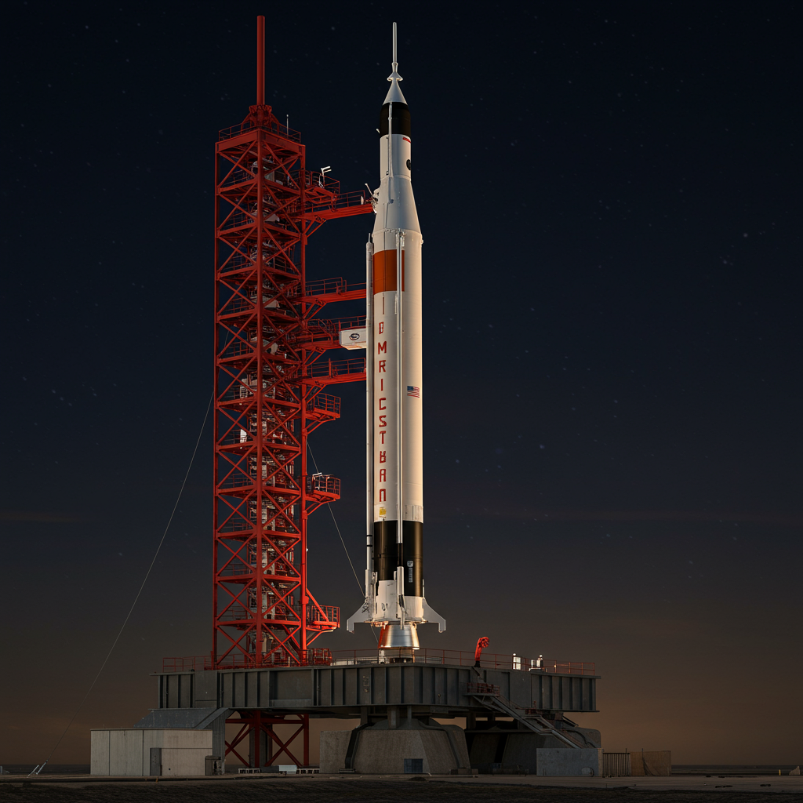
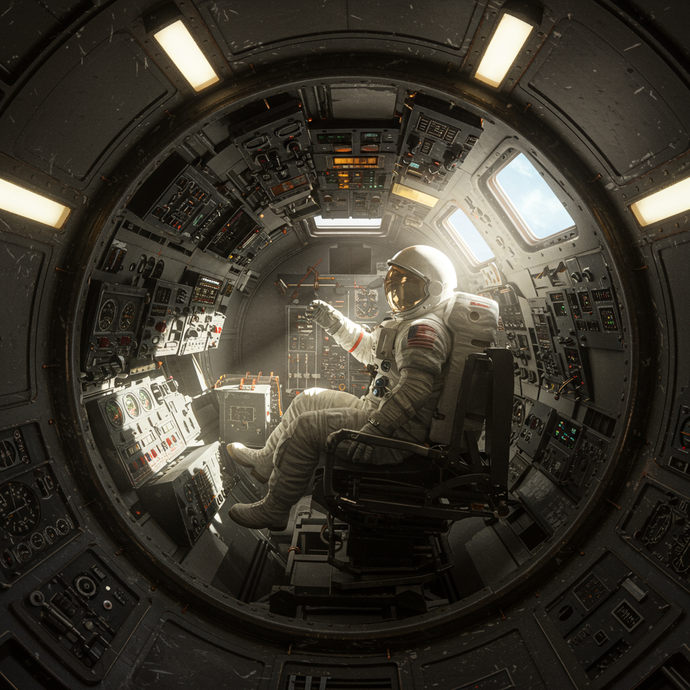
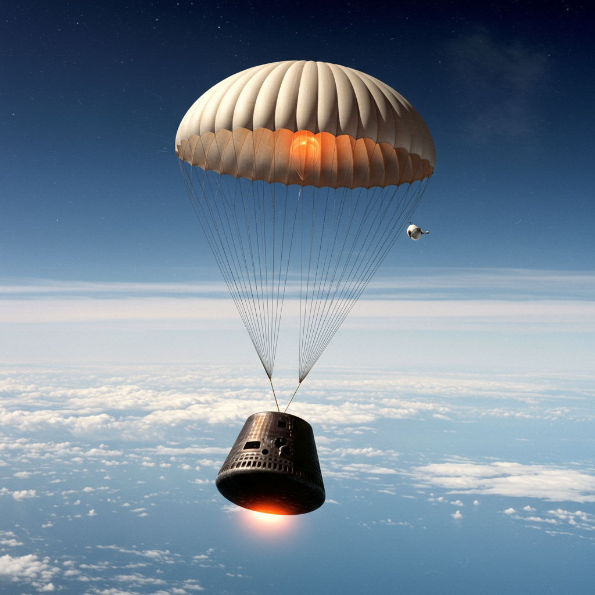

Programa Mercury (NASA, 1958–1963)
El Programa Mercury fue la primera iniciativa espacial tripulada de Estados Unidos, administrada por la NASA entre 1958 y 1963. Su objetivo principal fue poner a un ser humano en órbita y traerlo de regreso sano y salvo, sentando las bases para las futuras misiones Gemini y Apolo.
Mercury-Redstone 3 (1961) – Alan Shepard
Primer estadounidense en el espacio. Vuelo suborbital de 15 minutos abordo de la capsula FREEDOM 7. Objetivo: Demostrar que un ser humano podia pilotar en microgravedad.
Mercury-Redstone 4 (1961) – Gus Grissom
Segundo vuelo suborbital tripulado. La cápsula LIBERTY BELL 7 Objetivo: Perfeccionar procedimientosde lanzamiento y recuperacion. La capsula se hundió tras el amerizaje.
Mercury-Atlas 6 (1962) – John Glenn
Primer estadounidense en órbita. Realizó 3 vueltas alrededor de la Tierra. En la capsula FRIENDSHIP 7 Objetivo: Evaluar l aresistencia fisica y psicologica del vuelo orbital .
Mercury-Atlas 7 (1962) – Scott Carpenter
Repitió el vuelo de Glenn, Capsula AURORA 7, con experimentos científicos adicionales.
Mercury-Atlas 8 (1962) – Wally Schirra
Vuelo de 9 horas, Capsula SIGMA 7 considerado el más preciso en maniobras y reentrada.
Mercury-Atlas 9 (1963) – Gordon Cooper
Última misión del programa. 22 órbitas en 34 horas, Capsula FAITH 7. primera misión de larga duración, Objetivo: Evaluar efectos de un vuelo prolongado y comprobar sistemas de soporte vital.
⟵ Regresar a Primeros Astronautas